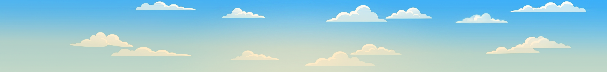
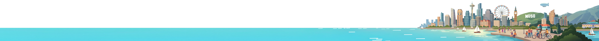
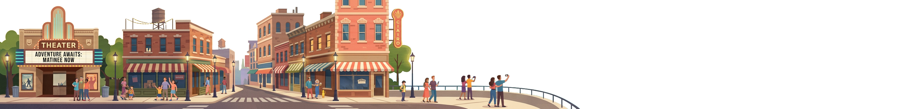
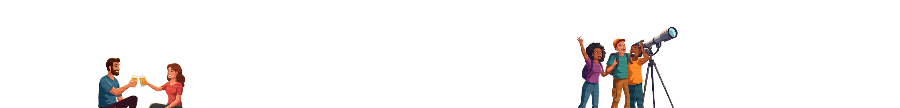

Swipe through the trail to find your next adventure




Four real illustrated depth layers moving at different speeds as you drag: sky (slowest — furthest back), cityscape (distant skyline), downtown buildings (midground), people (fastest — this is the foreground and the layer that defines how far you can scroll). All four source images share the same canvas size, so they stay pixel-locked to each other at rest and only separate as you scroll. The buildings layer has real alpha transparency, so the cityscape shows through its gaps.